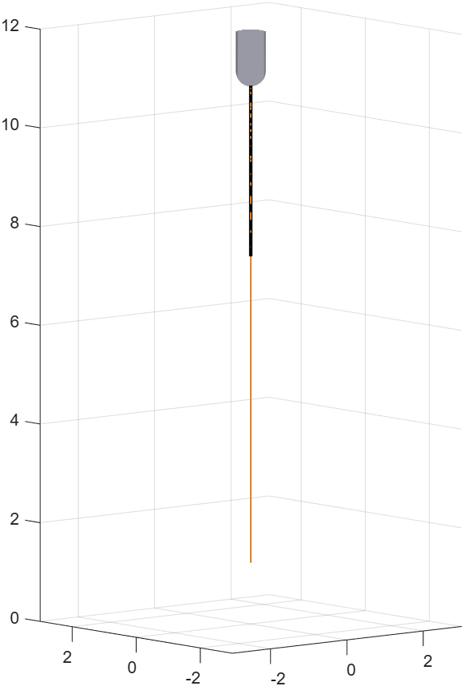
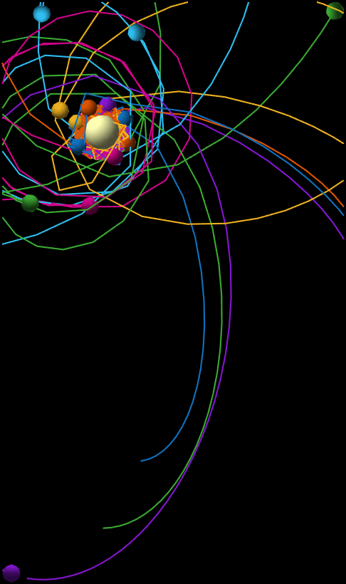

Loads on a body and ready-made force elements beyond gravity and contacts
The plain way to push a body is to set a load on the body itself. A
phx.Body has a force at its centre of mass,
AppliedForce, and a torque, AppliedTorque,
both in the body frame. The engine keeps them and adds them in every step, turned with the body,
until you change them; they cost nothing in MATLAB while the simulation runs.
body.AppliedForce = [0 0 900]; % N at the centre of mass, along the body z axis body.AppliedTorque = [0 0 2]; % N*m about the body z axis sim.step(2, 400); body.AppliedForce = [0 0 0]; % off again
A force F that acts at a point r off
the centre of mass (both in the body frame) is the same as the force F
at the centre plus the torque cross(r, F), and several such forces add
up. Set the properties from a phx.Function or a
phx.Script to vary them during the run, or connect them to the inputs of a
PHX Model block in Simulink, where the
PHX Point Forces block sums forces at several points. For a short
push, applyForce and applyTorque act for
the next step only.
Beyond gravity, contacts and the body loads, PHX offers ready-made elements for common types of interaction.
| Element | What it does | Key options |
|---|---|---|
| Thruster | An actuator rigidly attached to a body (rocket, propeller): a force at a point, with a throttle, a response lag, a reaction torque and a drawn exhaust. | Direction, MaxThrust,
Throttle (−1…1) |
| Resistance | Velocity-dependent environmental drag (air, water). | VelocityFactors |
| Buoyancy | Floating in a liquid — buoyancy and hydrodynamic damping. | Density, Level,
LinearDamping |
| Monopole | Pairwise interaction of charges (gravity, electrostatics). | Charge, Attractivity |
| Dipole | Pairwise dipole interaction (magnets). | Charge, Axis,
Attractivity |
A thruster is a force at a point of the body with the features of an engine: one Throttle
from −1 to 1 scaled by MaxThrust, a first-order lag, the reaction
torque of a propeller, and the exhaust drawn in the scene. Several thrusters on one body add up. It is
computed in MATLAB at every substep, so for a plain force the body loads above are cheaper.
clf; view(3); axis equal; grid on; camlight headlight; body = phx.Body("Position", [0 0 1], "Shape", {"Capsule", "Axis", "z", "Density", 80}); phx.Thruster(body, "Point", [0 0 -0.9], "Direction", [0 0 1], ... "MaxThrust", 900, "Throttle", 1); phx.Trace(body, "TracePoints", 240); % motion trail
% mutual gravity of a group of bodies, the built-in gravity is turned off phx.Monopole(planets, "Attractivity", 6.6743e-11, "Charge", [planets.Mass]); sim = phx.Simulation(planets, "Gravity", 0);


Monopole) trace out orbits. The trails
are drawn by phx.Trace. See phxex_gravity.phxex_buoyancy;
for magnets
phxex_magnets and phxex_maglev.